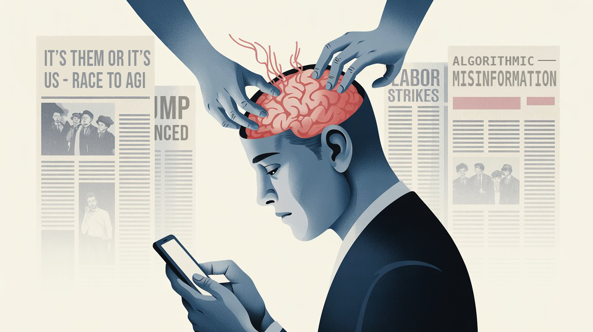
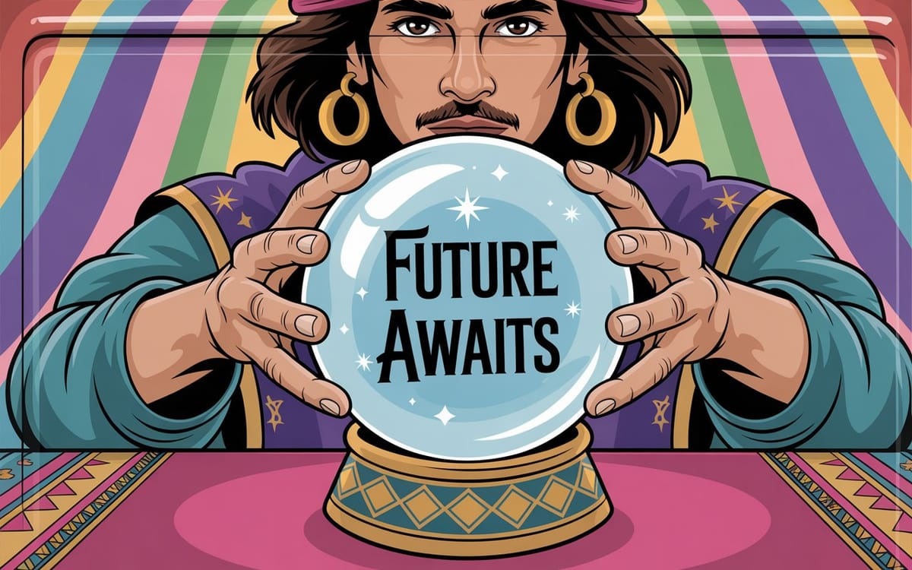

The Amnesia Machine
Before the internet, erasing history required burning books. Now, Silicon Valley's memory merchants have perfected something far more powerful: curated forgetting. Their algorithms don't just bury inconvenient truths—they replace them with carefully selected distractions.


"The greatest trick of digital capitalism wasn't convincing us to share our data—it was teaching us to forget what matters."
— Shoshana Zuboff, who wrote the book about how tech platforms are screwing us over, and now you can buy it on Amazon with targeted ads following you around the internet


The Politics of Digital Memory
Silicon Valley didn't stumble into amnesia—they architected it as their most profitable product…
For the past year, I've written about technology as if it were a neutral force—analyzing recommendation engines, discussing engagement metrics, dissecting business models. But I've been complicit in a dangerous myth: that our digital amnesia is just a technical problem rather than a political one.
The architecture of forgetting wasn't an accident. It was designed to serve power.
Remember the Foxconn walkouts during China's zero-COVID lockdowns? Workers literally shut down iPhone production lines because of quarantine conditions that bordered on imprisonment for the videos they smuggled out showing factory conditions that would make a Victorian mill owner blush.
Nothing. Almost nothing—I found a Reuters piece buried on page seven of Google results, wedged between seventeen different takes on Apple's "better than expected" quarterly numbers. The same earnings report that spin a 20% production shortfall as "supply chain resilience."
Meanwhile, Twitter feeds were wall-to-wall coverage of Tim Cook's interviews about "values-driven manufacturing." Not a single mention of the workers' actual conditions.
That wasn't algorithmic randomness. That was surgical precision.
The same suppression patterns that buried COVID-era labor stories continue today. Last week's Amazon warehouse organizing efforts? Disappeared beneath Prime Day coverage. The AI training data workers filing safety complaints? Buried under ChatGPT feature announcements.
The tools change, but the function remains identical: Power protecting itself through controlled narrative.
The New Gatekeepers
Before the internet, erasing history required burning books. It was visible, contestable, politically fraught. The powerful couldn't simply make inconvenient truths disappear—they had to actively destroy them, and people noticed.
Digital archiving changed that calculation entirely. Corporate platforms figured out how to erase history without leaving fingerprints—they perfected the art of making atrocities disappear while keeping their hands clean.
Here's how it actually works: In 2018, Facebook's "improved relevance algorithms" didn't just tweak your feed. They systematically buried years of Rohingya genocide documentation—witness testimonies, evidence videos, activist networks that had spent months building international awareness. Not deleted. Vanished.
The same posts that had generated thousands of shares six months earlier suddenly stopped appearing in feeds. Engagement plummeted not because people stopped caring, but because the algorithm stopped showing them reasons to care. Meanwhile, Facebook's "ethnic violence prevention" PR campaign—launched the exact same week—flooded the same feeds where genocide evidence used to live.
This is "algorithmic burial"—more surgical than censorship, more deniable than book burning. The information technically still exists. Try searching for it. You'll find fragments, isolated posts with zero reach, testimony buried under seventeen layers of "related content" about anything except systematic mass murder.
When you burn books, everyone smells smoke. When you bury algorithms, nobody knows what they can't see. The perfect crime: erasing history while the victims thank you for "improving their user experience."
The Profitable Business of Forgetting
So, who’s getting rich off our collective amnesia?
Every time a labor strike disappears from feeds, shareholders save money. Every time environmental damage gets buried in search results, extraction companies protect their stock price. Every time indigenous land rights discussions fade from view, tech campuses can expand without friction.
This isn't just about engagement metrics and ad revenue. It's about power maintaining itself through controlled narrative.
The ability to make information disappear has become one of Silicon Valley's most valuable products.
When Amazon's anti-union meetings never surface in year-end coverage of labor relations, that's a feature, not a bug. When discussions about AI's environmental cost vanish just as new models launch, that's not algorithmic chance. When debates about facial recognition in minority communities fade just as police contracts are renewed, that's not random content decay.
These platforms haven't just monetized attention—they've monetized selective amnesia. And the biggest customers aren't advertisers. They're the power structures that benefit from controlled narrative.
The New Memory Merchants
In the physical world, memory suppression was a crude tool. Burn a book, and people remember the burning. Ban a topic, and you create underground discussion networks. Try to erase history, and you leave visible scars that become their own form of memory.
But Silicon Valley's memory merchants have perfected something far more powerful: curated forgetting. Their algorithms don't just hide what matters—they drown it in exactly the kind of content that keeps you clicking without thinking. Try searching for "tech worker conditions" and you'll get pages of gleaming campus photos and benefits packages before finding a single story about contractor exploitation.
The genius is in the seamlessness. When platforms suppress information, they don't leave gaps—they fill them. Your feed isn't empty; it's full of other content carefully selected to hold your attention elsewhere. You don't miss what you can't remember existing.

This is how tech companies have become the most effective censors in history: They've made censorship feel like choice. You're not being denied information; you're being "shown what's relevant to your interests." The fact that those "interests" align perfectly with corporate power structures is, we're told, just an algorithm doing its job.
Digital Colonialism's New Frontier
What we're witnessing isn't just a shift in how information flows—it's a massive transfer of power over human memory itself.
Traditional power over memory required:
- Physical control of archives
- Control of education systems
- Direct censorship
- Visible suppression of dissent
Silicon Valley's memory control offers:
- Invisible curation of collective attention
- Algorithmic suppression of dissent
- Data-driven narrative management
- Plausible deniability ("just the algorithm")
We've traded democratic access to history for algorithmic permission to remember. The past now exists only when it serves power—when AI models trained on corporate priorities deem it "relevant."
Google decides what you can find. Facebook decides what you see. TikTok decides what feels important.
When did we hand over that power?
The Politics of Recursive Amnesia
The pattern keeps repeating, and that’s exactly the point:
- Crisis emerges that threatens corporate interests
- Initial coverage appears but is quickly buried
- Algorithmic suppression pushes story down feeds
- Public discourse shifts to approved narratives
- When crisis resurfaces, it's treated as new
- No connection made to previous incidents
- No pattern recognition allowed to emerge
- No collective learning threatens status quo
Take Amazon warehouse conditions. I've watched this same story "break" in 2017, 2019, 2021, and 2023. Every time, journalists act shocked—shocked!—to discover workers peeing in bottles or collapsing from heat exhaustion.
The story always vanishes right when workers start talking to each other across different facilities. Right when they're building momentum. Then two years later, another "shocking exposé" about the exact same conditions, covered like it's breaking news instead of a pattern we've seen for half a decade.
It's like we're stuck in some hellish news cycle where nothing ever connects to anything else, where every crisis gets the goldfish treatment.

This isn't coincidence. It's how digital platforms protect their partners' interests while maintaining plausible deniability. No one actively censored these stories. They just... became unfindable at precisely the moments when collective memory might have enabled collective action.
The Profitable Destruction of Understanding
How complex truths that might challenge power structures are systematically disadvantaged by design.
What scares the powerful most?
- Systemic analysis of wealth inequality
- Long-term environmental impact studies
- Historical patterns of labor exploitation
- Cross-facility worker organizing insights
- Authenticity and accountability
These all require sustained attention, historical context, and pattern recognition—precisely what current platforms make impossible.
Instead, we get what I've started thinking of as "profitable truths"—neat little stories that serve power while feeling like common sense:
- "Individual tech founders drive innovation" (erasing worker contributions)
- "AI progress is inevitable" (hiding human and environmental costs)
- "Gig work means freedom" (obscuring labor exploitation)
- "Social media connects us" (while monetizing our disconnection)
The system rewards quick hits—stuff you can grasp in a scroll, react to with an emoji, forget by tomorrow.
Meanwhile, the hard stuff—AI alignment, climate adaptation, how institutions actually work, anything that takes time to understand—gets buried. Not censored. Just… crowded out.
We're not having the wrong conversations about civilization-scale challenges. We're having no sustained conversation at all.
The Attention Merchants' Protection Racket
Tech platforms sell themselves as neutral content distributors, but they're really running a protection racket for power. Want your truth to be visible? Better make it serve the right interests.
- Want visibility? Avoid questioning tech wealth concentration
- Need reach? Don't connect separate labor struggles
- Seeking engagement? Never implicate advertisers
- Looking for amplification? Stay "apolitical" (which means supporting the status quo)
The genius is that it feels like natural selection—stories "organically" rising or falling based on audience interest. But the house always wins.
I know this system intimately because I've benefited from it. My own tech analysis spreads when it treats symptoms as isolated incidents, when it focuses on technical solutions to political problems, when it maintains the fiction that our digital infrastructure wasn't built on systematic exploitation.
Breaking the Machine
Last month, I spoke at a major tech conference. During Q&A, a content moderator asked about PTSD rates among her colleagues. The room grew uncomfortable. A platform executive quickly redirected to discussing AI safety frameworks.
I watched in real time as power determined what we would and wouldn't discuss. The moderator's question never made it to the conference's social media highlights. The executive's response went viral.
Three weeks later, that same content moderator was featured in an investigative report about mental health impacts of content moderation. The story disappeared from feeds within hours. The platform announced new AI moderation tools the same day. That announcement trended for a week.

Collective Memory as Resistance
Personal knowledge management apps won’t save us. We desperately need:
- Community-controlled information infrastructure
- Worker-owned content platforms
- Cross-movement knowledge preservation
- Dedicated archives of corporate harm
- Protected channels for marginalized voices
After watching this system for a year, I'm convinced the amnesia machine isn't broken—it's working perfectly.
It will come from:
- Tech workers organizing across companies
- Content moderators sharing their stories
- Communities building their own archives
- Journalists preserving evidence of harm
- All of us refusing to let power determine what we remember
The Market Won't Save Us
Silicon Valley is already trying to co-opt this critique. They'll sell us "democratic" AI models, "ethical" content filters, "community-driven" platforms. All carefully designed to preserve the same power structures while appearing to address concerns.
We must reject these false solutions. The problem isn't technical—it's political. It's about who controls our collective memory, and thus our ability to learn from history, organize for change, and imagine different futures.
What Actually Might Work
After a year of complicity, here's what I believe we must do:
Build power, not just platforms: Support tech worker unions, content moderator collectives, and community data cooperatives.
Preserve dangerous memories: Create distributed archives of corporate harm, labor struggles, and environmental damage. Not because the technology is revolutionary, but because collective memory is inherently revolutionary.
Connect separate struggles: Link content moderator trauma to warehouse worker exploitation to environmental damage. The amnesia machine works by keeping these narratives separate. Our power lies in connecting them.
Practice radical attribution: Acknowledge the hidden labor behind every technological "breakthrough." Name the communities whose knowledge we build upon. Credit the workers whose exploitation makes our platforms possible.

A Personal Reckoning
I've spent years writing about technology as if it were neutral, as if the amnesia machine wasn't built by real people making real choices that serve real interests. I've been part of the problem.
This isn't just my professional reckoning—it's a call to everyone who works in tech, writes about tech, or builds these systems: We can't pretend anymore that our work is apolitical. Every line of code, every algorithm, every content policy is a political choice about who gets remembered and who gets forgotten.
This week and next, your feeds will be full of year-end tech retrospectives celebrating innovation and progress. They won't mention the content moderators who developed PTSD, the warehouse workers who fought for basic safety, or the communities displaced by tech campus expansion.
But we remember. And in that remembering lies the seed of resistance.
The amnesia machine works because we let it work. Because we accept its premise that some stories matter more than others. Because we've internalized its logic that virality equals importance, that trending equals truth.
Power fears that we might remember together. That content moderators might share stories with warehouse workers. That displaced communities might connect with tech whistleblowers. That we might weave our separate threads of memory into a rope strong enough to pull down the machine.
And we’ll continue scrolling, forgetting we've forgotten, unable to remember we ever knew.
It's about deciding, collectively, that we refuse to forget.
I'm done contributing to the amnesia.
Are you?
Don't miss the weekly roundup of articles and videos from the week in the form of these Pearls of Wisdom. Click to listen in and learn about tomorrow, today.


Sign up now to read the post and get access to the full library of posts for subscribers only.
 🌶️ iamkhayyam
🌶️ iamkhayyam
About the Author
Khayyam Wakil is a systems theorist whose work examines algorithmic control, digital memory architectures, and information visibility. His early research on collective memory systems and attention economics helped expose the mechanisms behind modern content distribution platforms. After two decades inside technology’s algorithmic infrastructure, he now documents the power dynamics of digital remembering and forgetting—mapping who controls what information survives, what disappears, and who benefits from our collective amnesia.
Through his weekly analysis, he investigates the intersection of technical systems and power structures, working to make visible the often-concealed mechanisms that determine which stories persist and which fade from public consciousness. His current focus is on developing frameworks for identifying and countering algorithmic suppression techniques that selectively erase histories challenging dominant interests.
His work bridges technology criticism and memory preservation to create more democratic information ecosystems.
Contact: sendtoknowware@protonmail.com
"Token Wisdom" - Weekly deep dives into the future of intelligence: https://ghost-production-198e.up.railway.app
#digitalamnesia #algorithmicbias #informationfiltering #attentioneconomy #silencedhistory #curatedforgetfulness #platformpower #informationcontrol #datamonopoly #narrativecontrol #longread | 🧠⚡ | #tokenwisdom #thelessyouknow 🌈✨